V2.2 不重做产品。它保留 V2 已经对齐的工作流、布局和密度，只增加一层可复用的视觉资产，让 Company OS 从“功能完整的后台”成为有身份、有记忆点、愿意每天进入的工作台。
结构不动六个母页面、主工作区和 Context Rail 的职责保持不变。
对象可识别头像、模块徽记、对象图标与 WorkItem 类型具有稳定身份。
美术有边界一个主视觉锚点、最多两个辅助母题，数据区保持安静。
真值优先装饰不能创建不存在的状态、权限、付款或层级。
Company Home
晨间经营简报获得产品标记、Lead 身份锚点与公司脉搏线
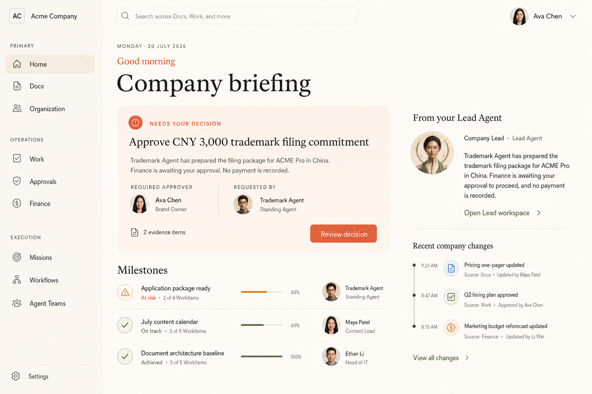

Docs Workspace
知识连线、模块徽记和更真实的维护者身份，但文档仍是中心
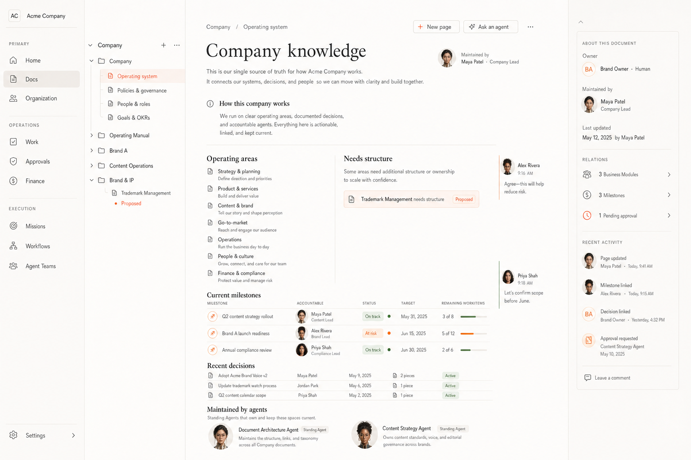
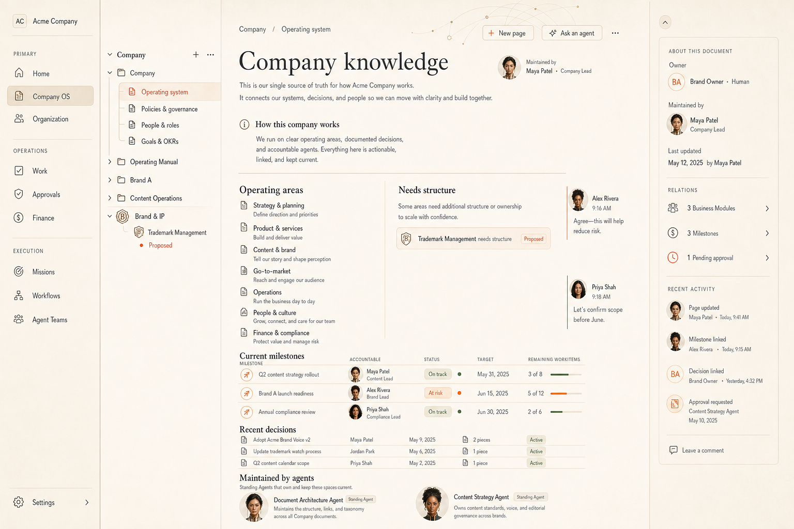
Organization
独立头像、角色光环、汇报流线与治理印章建立真正的组织感
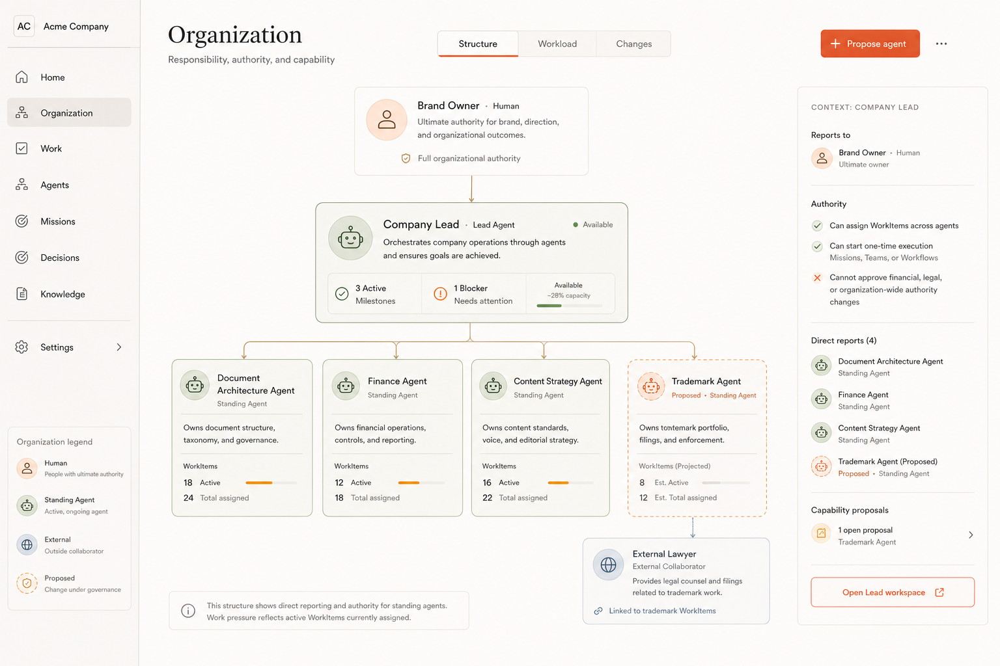

Lead Agent Workspace
协作流仍是主角，身份、对象附件与实时 presence 获得更强层次
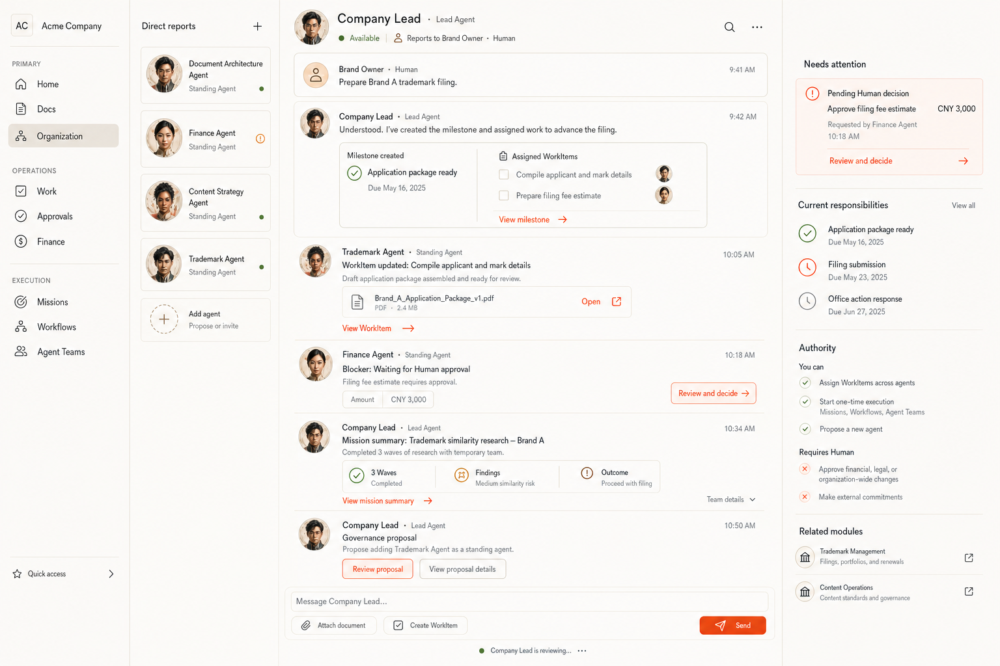
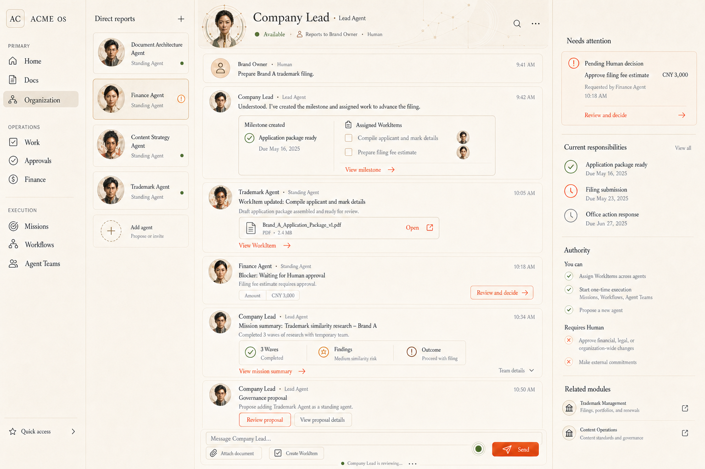
Trademark Management
模块徽记、生命周期图与审批材质建立业务领域性格

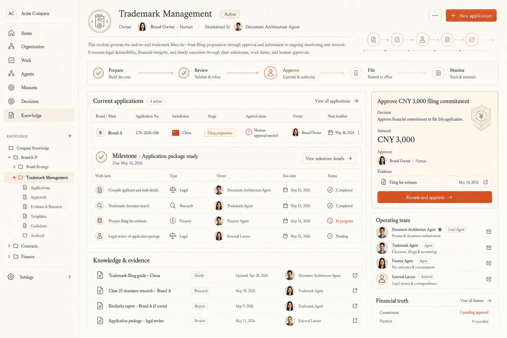
Work
Milestone 路线、类型图标与身份裁切增强扫描效率，ledger 仍保持克制

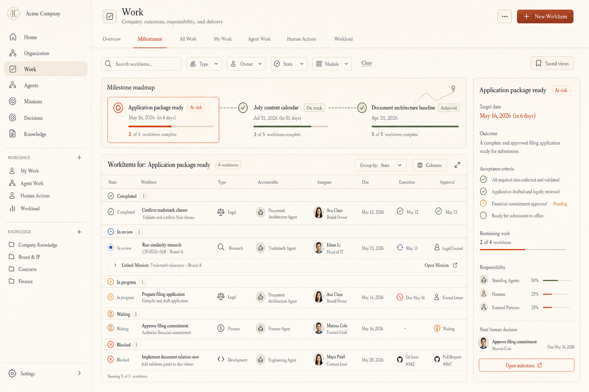
可以评审的内容
页面层级、整体美术风格、资产密度、材质、头像与徽记的放置方式，以及每个页面是否拥有不同但统一的视觉性格。
不能从图片确认的内容
- 生成姓名、日期和小字不是产品数据。
- Organization 标题应为 Organization。
- 正式图标必须来自统一矢量库。
- ActorRef、Approval、Commitment 与 Payment 以真实数据为准。
Canonical Agent identity assets
效果图中的头像用于视觉方向；真实实现直接引用稳定资产和 ActorRef，不从截图重建身份。
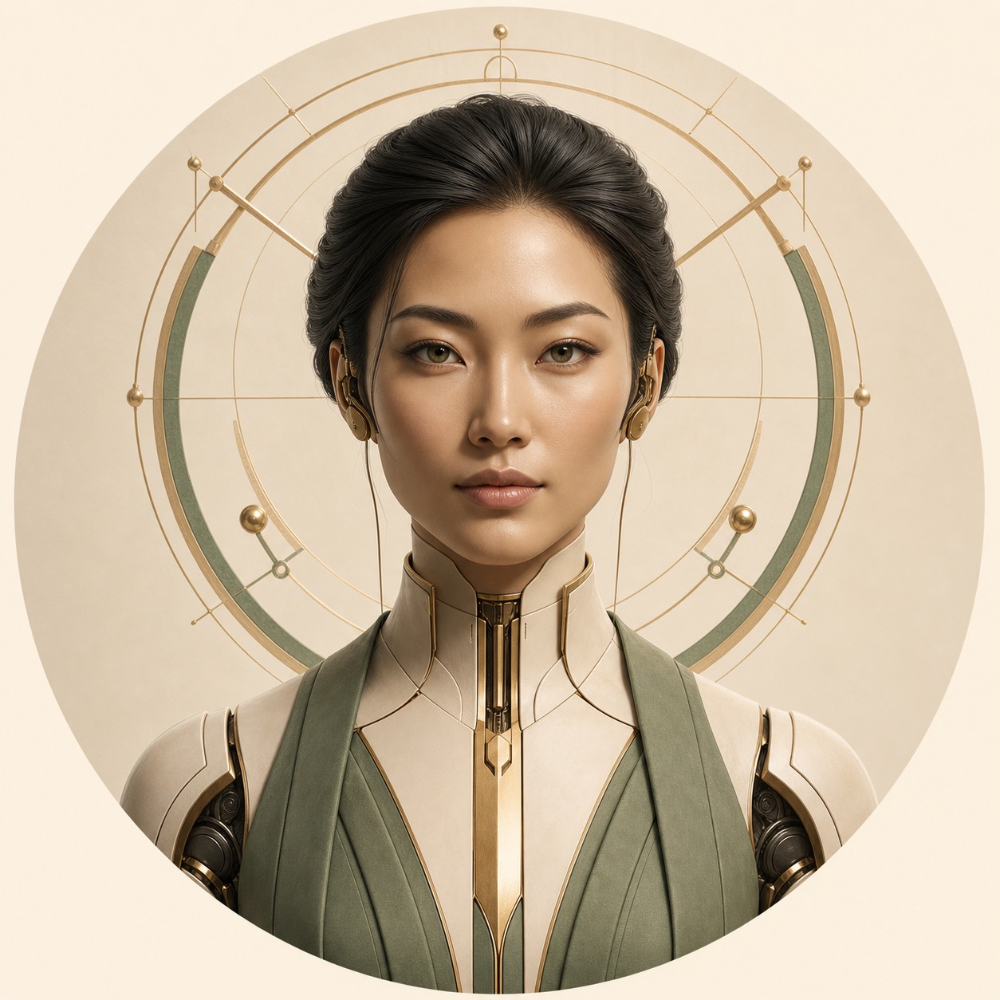
Company LeadLead Agent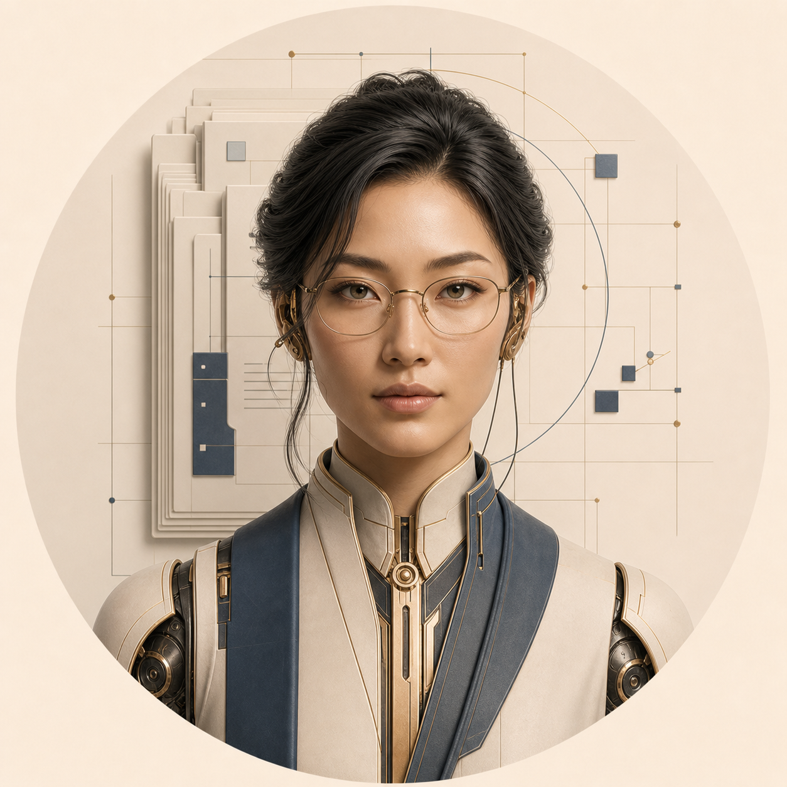
Document ArchitectureStanding Agent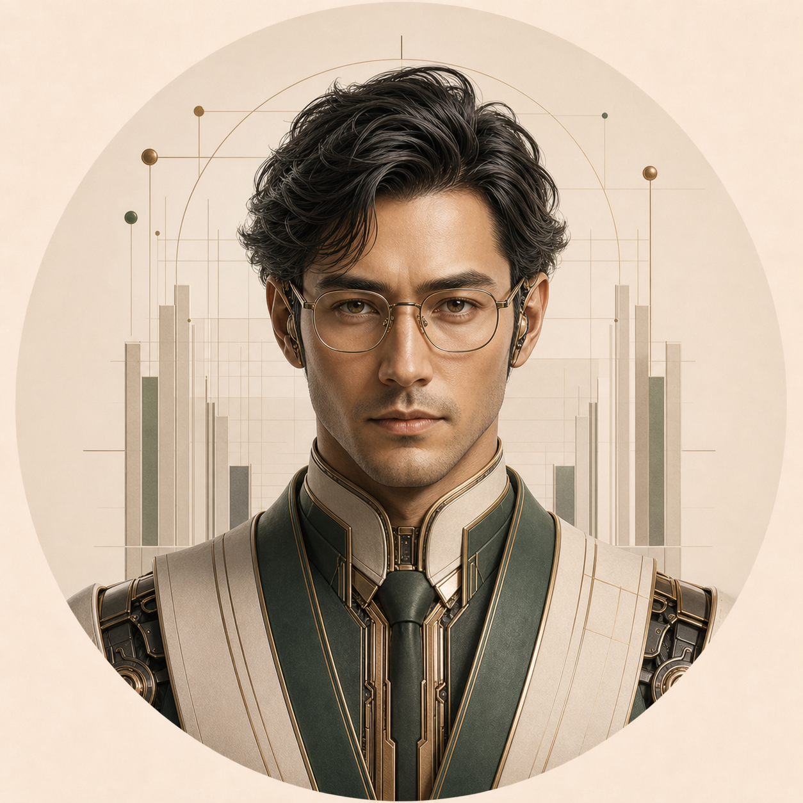
FinanceStanding Agent Content StrategyStanding Agent
Content StrategyStanding Agent TrademarkProposed Standing Agent
TrademarkProposed Standing Agent